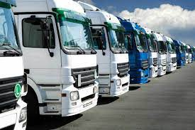

Há mais de 20 anos oferecendo soluções em Transportes e Logística Atuamos desde 1999 no seguimento de transportes, cargas rápidas e agendamentos no Paraná e São Paulo e em todo território nacional com embarques diretos e dedicados. Oferecemos soluções práticas e viáveis de acordo com as necessidades individuais de cada cliente. Contamos com Estrutura Física com capacidade de armazenamento e paletização de mercadorias na Matriz e Filiais, bem como uma ampla frota de veículos próprios e agregados, devidamente padronizados, motoristas qualificados e com equipamentos modernos de monitoramento e rastreamento de cargas.
